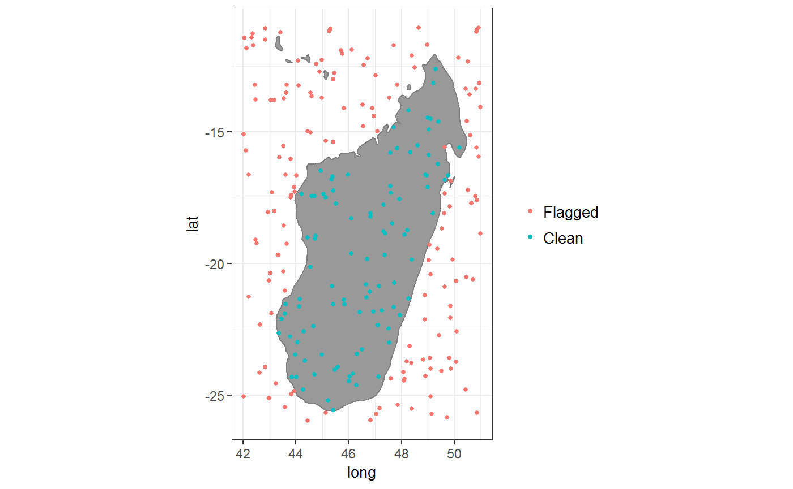
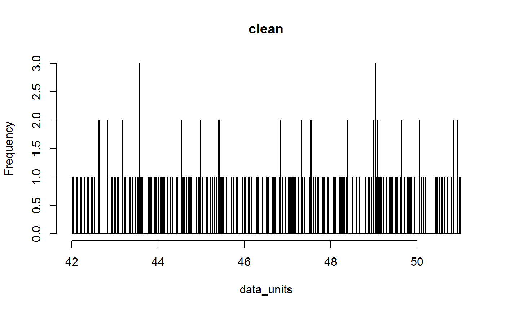
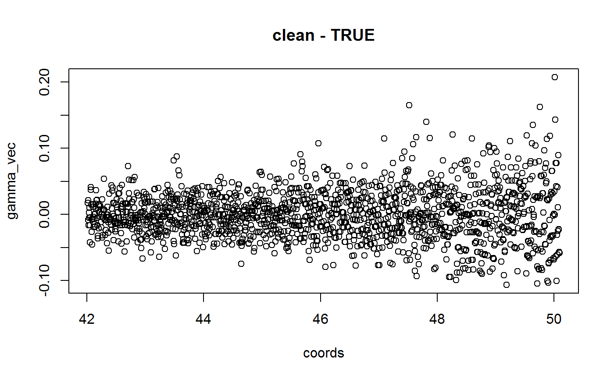
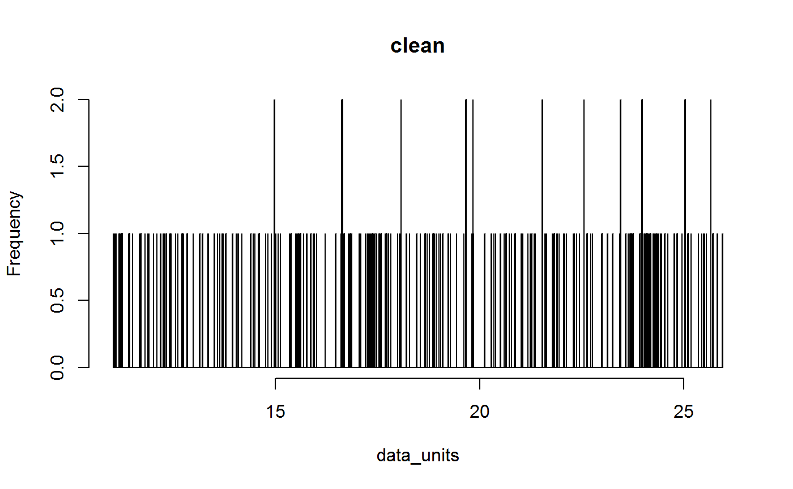
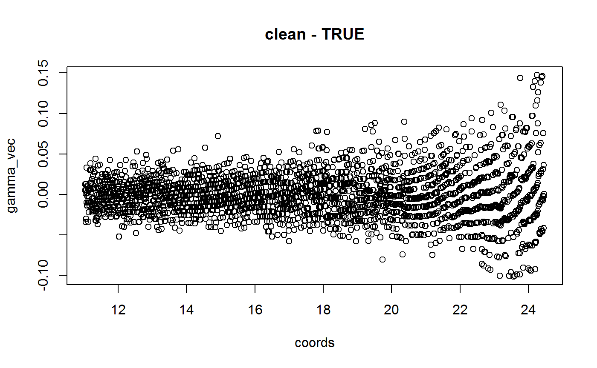

Note: the latest release of CoordinateCleaner (2.0), might cause compatibility issues with scripts using older versions (1.x), since some function and argument names changed. Please see the news file for details.
Automated flagging of common spatial and temporal errors in biological and palaeontological collection data, for the use in conservation, ecology and palaeontology. Specifically includes tests for
- General coordinate validity
- Country and province centroids
- Capital coordinates
- Coordinates of biodiversity institutions
- Spatial outliers
- Coordinate-country discordance
- Duplicated coordinates per species
- Assignment to the location of the GBIF headquarters
- Urban areas
- Seas
- Plain zeros
- Equal longitude and latitude
- Rounded coordinates
- DDMM to DD.DD coordinate conversion errors
- Large temporal uncertainty (fossils)
- Equal minimum and maximum ages (fossils)
- Spatio-temporal outliers (fossils)
CoordinateCleaner can be particularly useful to ensure geographic data quality when using data from GBIF (e.g. obtained with rgbif) for historical biogeography (e.g. with BioGeoBEARS or phytools), automated conservation assessment (e.g. with speciesgeocodeR or conR) or species distribution modelling (e.g. with dismo or sdm. See scrubr and taxize for complementary taxonomic cleaning or biogeo for correcting spatial coordinate errors.
See News for update information.
Installation
Stable from CRAN
install.packages("CoordinateCleaner")## Installing package into 'C:/Users/alexander.zizka/Documents/R/win-library/3.4'
## (as 'lib' is unspecified)## Warning: unable to access index for repository https://cloud.r-project.org/src/contrib:
## cannot open URL 'https://cloud.r-project.org/src/contrib/PACKAGES'
## Warning: unable to access index for repository https://cloud.r-project.org/src/contrib:
## cannot open URL 'https://cloud.r-project.org/src/contrib/PACKAGES'## Warning: unable to access index for repository https://cloud.r-project.org/bin/windows/contrib/3.4:
## cannot open URL 'https://cloud.r-project.org/bin/windows/contrib/3.4/PACKAGES'
## Warning: unable to access index for repository https://cloud.r-project.org/bin/windows/contrib/3.4:
## cannot open URL 'https://cloud.r-project.org/bin/windows/contrib/3.4/PACKAGES'## package 'CoordinateCleaner' successfully unpacked and MD5 sums checked
##
## The downloaded binary packages are in
## C:\Users\alexander.zizka\AppData\Local\Temp\RtmpWkHcQD\downloaded_packageslibrary(CoordinateCleaner)## Warning: package 'CoordinateCleaner' was built under R version 3.4.4## Loading required package: spDevelopmental using devtools
devtools::install_github("azizka/CoordinateCleaner")## Downloading GitHub repo azizka/CoordinateCleaner@master
## from URL https://api.github.com/repos/azizka/CoordinateCleaner/zipball/master## Installing CoordinateCleaner## Installing 1 package: sp## Installing package into 'C:/Users/alexander.zizka/Documents/R/win-library/3.4'
## (as 'lib' is unspecified)## Warning: package 'sp' is in use and will not be installed## "C:/PROGRA~1/R/R-34~1.3/bin/x64/R" --no-site-file --no-environ --no-save \
## --no-restore --quiet CMD INSTALL \
## "C:/Users/alexander.zizka/AppData/Local/Temp/RtmpWkHcQD/devtools2d10485350cb/azizka-CoordinateCleaner-04f7f58" \
## --library="C:/Users/alexander.zizka/Documents/R/win-library/3.4" \
## --install-tests## ## Reloading installed CoordinateCleanerlibrary(CoordinateCleaner)Usage
A simple example:
# Simulate example data
minages <- runif(250, 0, 65)
exmpl <- data.frame(species = sample(letters, size = 250, replace = TRUE),
decimallongitude = runif(250, min = 42, max = 51),
decimallatitude = runif(250, min = -26, max = -11),
min_ma = minages,
max_ma = minages + runif(250, 0.1, 65),
dataset = "clean")
# Run record-level tests
rl <- clean_coordinates(x = exmpl)## Testing coordinate validity## Flagged 0 records.## Testing equal lat/lon## Flagged 0 records.## Testing zero coordinates## Flagged 0 records.## Testing country capitals## Flagged 0 records.## Testing country centroids## Flagged 0 records.## Testing sea coordinates## Flagged 152 records.## Testing geographic outliers## Flagged 0 records.## Testing GBIF headquarters, flagging records around Copenhagen## Flagged 0 records.## Testing biodiversity institutions## Flagged 0 records.## Flagged 152 of 250 records, EQ = 0.61.summary(rl)## decimallatitude equ zer cap
## 0 0 0 0
## cen sea otl gbf
## 0 152 0 0
## inst summary
## 0 152plot(rl)
# Dataset level
dsl <- clean_dataset(exmpl)## Testing for dd.mm to dd.dd conversion errors## Flagged 0 records## Testing for rasterized collection
## Flagged 0 datasets.
# For fossils
fl <- clean_fossils(x = exmpl,
taxon = "species",
lon = "decimallongitude",
lat = "decimallatitude")## Testing coordinate validity## Flagged 0 records.## Testing equal lat/lon## Flagged 0 records.## Testing zero coordinates## Flagged 0 records.## Testing country centroids## Flagged 0 records.## Testing spatio-temporal outliers on taxon level## Flagged 0 records.## Testing temporal range outliers on dataset level## Flagged 0 records.## Testing temporal range outliers on taxon level## Flagged 0 records.## Testing age validity## Flagged 0 records.## Testing GBIF headquarters, flagging records around Copenhagen## Flagged 0 records.## Testing biodiversity institutions## Flagged 0 records.## Flagged 0 of 250 records, EQ = 0summary(fl)## decimallatitude aeq cen gbf
## 0 0 0 0
## inst spt zer summary
## 0 0 0 0# Alternative example using the pipe
library(tidyverse)## -- Attaching packages ----------------------------------------------------------------------------------- tidyverse 1.2.1 --## v ggplot2 3.0.0 v purrr 0.2.5
## v tibble 1.4.2 v dplyr 0.7.4
## v tidyr 0.8.0 v stringr 1.3.0
## v readr 1.1.1 v forcats 0.3.0## Warning: package 'ggplot2' was built under R version 3.4.4## Warning: package 'purrr' was built under R version 3.4.4## -- Conflicts -------------------------------------------------------------------------------------- tidyverse_conflicts() --
## x dplyr::filter() masks stats::filter()
## x dplyr::lag() masks stats::lag()
## x purrr::map() masks maps::map()cl <- exmpl %>%
cc_val()%>%
cc_cap()%>%
cd_ddmm()%>%
cf_range(lon = "decimallongitude",
lat = "decimallatitude",
taxon ="species")## Testing coordinate validity## Flagged 0 records.## Testing country capitals## Flagged 0 records.## Testing for dd.mm to dd.dd conversion errors## Flagged 0 records## Testing temporal range outliers on taxon level## Flagged 0 records.Documentation
Pipelines for cleaning data from the Global Biodiversity Information Facility and the Paleobiology Database are available in vignettes.
Contributing
See the CONTRIBUTING document.
Citation
Zizka, A, Silvestro, D & Antonelli A (2018) CoordinateCleaner: standardized cleaning of occurrence records from biological collection databases. https://github.com/azizka/CoordinateCleaner